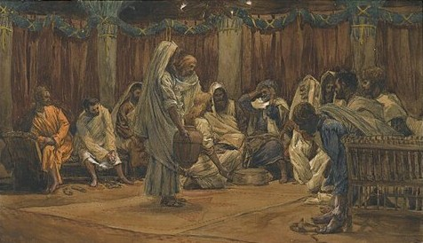
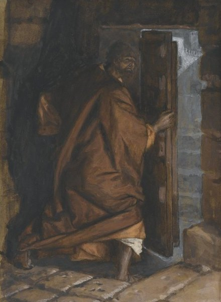

John 13
The towel and the night
On his last night, Jesus washes his disciples' feet, sends Judas out into the dark, and gives a new commandment: love one another as I have loved you.
Things to watch for
Keep these questions in the back of your mind as we read. We'll come back to every one of them at the end.
- HumilityWhy would the Lord of all wash his disciples' feet?
- Being made cleanWhat's the difference between being washed and having your feet washed?
- ServingWhat does Jesus expect us to do for one another?
- BetrayalHow did Jesus treat the man he knew would betray him?
- LoveWhat makes the new commandment new?
- FailureWhat did Jesus know about Peter's fall before it happened?
Part one
The towel and the basin
Verses 1–17
On his last night, the Lord of glory gets down on his knees with a towel.
Loved to the end
It means both: to the last hour, and all the way. Jesus knew the cross was hours away (“his hour was come”). He didn't spend his last night protecting himself. He spent it on them.
And look who “his own” were: men who would argue, fall asleep, run, and deny him before morning. He loved them anyway, all the way to the end. That's the love you're dealing with too.
All things in his hands. So he picked up a towel.
- risethfrom supper
- laid asidehis garments
- tooka towel
- girdedhimself
- pourethwater into a bason
- began to washthe disciples' feet
- wipewith the towel
Seven actions, each one a step lower. Outer robe off, towel tied on: he dressed like the lowest servant in the house. Paul describes the same descent:
“But made himself of no reputation, and took upon him the form of a servant, and was made in the likeness of men:”
Philippians 2:7
Knowing he held all power didn't make Jesus grab for more. It set him free to serve. A man who is secure in God doesn't have anything to prove.
Dirty feet at supper
Men walked dusty roads in sandals. Washing a guest's feet was a job for the lowest servant in the house.
At a feast, men lay on couches around a low table, leaning on the left elbow, with their feet stretched out behind them.
Supper had started, and the feet were still dirty. None of the Twelve offered. That same night they argued over “which of them should be accounted the greatest” (Luke 22:24). So Jesus went around the outside of the table, from one pair of dirty feet to the next.

“Never”
Peter means well. He can't stand to see his Lord kneeling at his feet. But underneath it is pride: I'll serve you, but you're not going to serve me.
Jesus' answer is strong. No washing, no part with him. Nobody belongs to Jesus without first letting him wash them. You can't clean yourself up first and then come.
For a lot of us, that's the hardest part of getting well: letting somebody see the dirt and help with it. Jesus starts right there.
Bathed once, feet as needed
Jesus uses two different words. louō: a bath, the whole body. niptō: washing one part, like the feet. A man who bathed at home and walked to supper only needed his feet washed.
When you trusted Christ, you were washed all over, once for all: “clean every whit.” Sin along the road doesn't undo that bath. It means the feet need washing.
“If we confess our sins, he is faithful and just to forgive us our sins, and to cleanse us from all unrighteousness.”
1 John 1:9
You don't get saved all over again every time you stumble. You come back, tell him the truth, and let him wash your feet. And “not all”: Judas sat at that table for three years and never had the bath. Being close to Jesus isn't the same as belonging to him.
I did it. Now you do it.
The word for “example” means a pattern you copy, like tracing a letter. Some churches wash feet as a service, and that's fine. But the heart of it is this: find the lowest job that would help a brother, and do it without being asked.
Happy are ye if ye do them.
If the Master didn't think a towel was beneath him, it isn't beneath his servants (v. 16). And “happy” is the same word Jesus used in “Blessed are the poor in spirit.”
Knowing isn't the same as doing. In recovery you learn that fast: knowing the steps never kept anybody clean. Working them does. The Christian life is the same. The blessing is in the doing.
“For even the Son of man came not to be ministered unto, but to minister, and to give his life a ransom for many.”
Mark 10:45
Part two
One of you
Verses 18–30
Jesus names his betrayer, and Judas walks out into the dark.
A friend at the table
Psalm 41:9 (David)
“Yea, mine own familiar friend, in whom I trusted, which did eat of my bread, hath lifted up his heel against me.”
John 13:18 (Jesus)
“He that eateth bread with me hath lifted up his heel against me.”
David wrote this about a trusted friend who turned on him. In that world, eating bread together meant friendship and loyalty. To turn on a man whose bread you ate was the lowest kind of betrayal. “Lifted up his heel” is a picture of a kick.
Why tell them ahead of time? “That, when it is come to pass, ye may believe that I am he” (v. 19). The betrayal didn't catch Jesus off guard. It proved he knew. And remember: an hour earlier, he had washed Judas's feet too.
Nobody suspected Judas
- Peter
- Andrew
- James
- John
- Philip
- Bartholomew
- Thomas
- Matthew
- James, son of Alphaeus
- Thaddaeus
- Simon the Zealot
- Judas Iscariot
After three years together, not one of them looked at Judas. He had kept his double life hidden from everybody but Jesus. Matthew says each man asked, “Lord, is it I?” (Matthew 26:22).
That's how hidden sin works. It can sit at the table, look like everybody else, even carry the money. But Jesus sees it. And he was “troubled in spirit”: the betrayal hurt him. He wasn't cold about losing Judas.
The sop
“The disciple whom Jesus loved” is almost certainly John, who wrote this book and never uses his own name. Lying just in front of Jesus, he leaned back against his chest and could ask a quiet question.
A sop was a piece of bread dipped in the shared dish. A host handing one to a guest was a mark of honour and friendship. Judas had to be close by to receive it.
Jesus did it knowing everything. It was one more open hand held out to Judas. Judas took the bread, but not the friendship.
How a man ends up in the night
- a thiefat the money bag (12:6)
- the devil put it into his heart(13:2)
- Satan entered into him(13:27)
- went outand it was night (13:30)
“This he said, not that he cared for the poor; but because he was a thief, and had the bag, and bare what was put therein.”
John 12:6
Judas didn't fall in one night. It started small: helping himself from the bag. He kept feeding it. Then the devil planted the plan, and then Satan moved in. (“That thou doest, do quickly” wasn't permission. Jesus was showing he was still in charge of the night, even if nobody at the table understood.)
Every relapse has a staircase like this. It starts with a thought you keep entertaining, long before the night you walk out. Deal with it at the top of the stairs, out loud, with Jesus and with a brother.

Four words
John could have just said Judas left. He adds “and it was night.” It was dark outside, and darker inside Judas. He walked out on the Light of the world.
“Then spake Jesus again unto them, saying, I am the light of the world: he that followeth me shall not walk in darkness, but shall have the light of life.”
John 8:12
Judas and Peter both failed Jesus that night. Judas was sorry too (Matthew 27:3), but he took his sorrow everywhere except to Jesus, and it destroyed him. Peter wept, and came back (Luke 22:62). The difference wasn't the size of the sin. It was where each man took it.
Part three
As I have loved you
Verses 31–38
Jesus gives a new commandment. Peter promises to die for him.
Glory, the moment Judas leaves
The door has just shut behind Judas. The arrest is a few hours away. And Jesus says, “Now is the Son of man glorified.” He calls the cross his glory, because that's where God's love and holiness shine brightest.
Then: “Little children.” It's a father's word at a goodbye, the only time in the Gospels Jesus uses it. John never forgot it. He uses it over and over in his letters: “My little children, these things write I unto you, that ye sin not” (1 John 2:1).
What makes it new
“Love thy neighbour” wasn't new. Moses wrote it about 1,400 years earlier (Leviticus 19:18). What's new is the measuring stick.
Nobody loves like that on willpower. It starts with being loved: “We love him, because he first loved us” (1 John 4:19).
And it's how the world can tell who belongs to him. Not by a badge or a building, but by how brothers treat each other. A room full of men who carry each other preaches louder than any sermon.
Three times down, three times back
Peter meant every word of verse 37. Within hours he was warming his hands by a fire, telling a servant girl, “I am not.” But look at what Jesus said to him that same night:
“And the Lord said, Simon, Simon, behold, Satan hath desired to have you, that he may sift you as wheat: But I have prayed for thee, that thy faith fail not: and when thou art converted, strengthen thy brethren.”
Luke 22:31–32
Jesus saw the fall coming, prayed for Peter ahead of time, and already had his way back planned. Even in verse 36: “thou shalt follow me afterwards.” The promise came in the same breath as the warning. If you've failed him, that isn't the end of your story. Come back, and then strengthen your brothers.
Points to remember
- Humility“Took a towel, and girded himself” 13:4Knowing all power was his, Jesus took the lowest job in the room.
- Being made clean“Clean every whit” 13:10Saved once, for good. When you get dirty along the road, come and let him wash your feet.
- Serving“Ye also ought to wash one another's feet” 13:14Do the low, unasked-for job that helps a brother. The blessing is in the doing.
- Betrayal“He gave it to Judas Iscariot” 13:26He knew, washed Judas's feet anyway, and held out his hand to the very end.
- Love“As I have loved you” 13:34The new measure of love is Jesus himself. That's how the world knows we're his.
- Failure“Thou shalt follow me afterwards” 13:36He knew Peter would fall, and had already planned his way back.
Question 1 of 6
HumilityWhy would the Lord of all wash his disciples' feet?
What verses tell us about this?
“For even the Son of man came not to be ministered unto, but to minister, and to give his life a ransom for many.”
Mark 10:45
Answer
Because he loved them to the end, and because he was completely secure. He knew the Father had put all things in his hands, so he had nothing to prove. He came to serve, not to be served, and the towel was a small picture of the cross that was coming.
Question 2 of 6
Being made cleanWhat's the difference between being washed and having your feet washed?
What verses tell us about this?
“If we confess our sins, he is faithful and just to forgive us our sins, and to cleanse us from all unrighteousness.”
1 John 1:9
“And I give unto them eternal life; and they shall never perish, neither shall any man pluck them out of my hand.”
John 10:28
Answer
Being washed is salvation: it happens once, when you trust Christ, and it makes you clean all over for good. Having your feet washed is what happens along the way: when you sin, you confess it and he cleanses you. Stumbling doesn't undo your salvation, but it does mean you need to come back and let him wash your feet.
Question 3 of 6
ServingWhat does Jesus expect us to do for one another?
What verses tell us about this?
Answer
To do for each other what he did for us: take the low job, without being asked and without keeping score. If the Lord and Master did it, none of us is too big for it. And it isn't enough to know this. The blessing comes when we actually do it.
Question 4 of 6
BetrayalHow did Jesus treat the man he knew would betray him?
What verses tell us about this?
Answer
With kindness, right to the end. He knew all along, yet he washed Judas's feet with the others, kept his secret from the table, was grieved over him, and handed him the sop of friendship. Judas wasn't pushed out. He chose to walk out into the night.
Question 5 of 6
LoveWhat makes the new commandment new?
What verses tell us about this?
“Thou shalt not avenge, nor bear any grudge against the children of thy people, but thou shalt love thy neighbour as thyself: I am the LORD.”
Leviticus 19:18
“Hereby perceive we the love of God, because he laid down his life for us: and we ought to lay down our lives for the brethren.”
1 John 3:16
Answer
The measure. The old command said love your neighbour “as thyself.” The new one says love each other “as I have loved you”: with a towel, with patience for a traitor, with his own life. We can only love like that because he loved us first, and that love is how the world will know we're his.
Question 6 of 6
FailureWhat did Jesus know about Peter's fall before it happened?
What verses tell us about this?
“But I have prayed for thee, that thy faith fail not: and when thou art converted, strengthen thy brethren.”
Luke 22:32
“He saith unto him the third time, Simon, son of Jonas, lovest thou me? Peter was grieved because he said unto him the third time, Lovest thou me? And he said unto him, Lord, thou knowest all things; thou knowest that I love thee. Jesus saith unto him, Feed my sheep.”
John 21:17
Answer
Everything: how many times, and how soon. And he loved Peter anyway. He prayed for him beforehand, promised “thou shalt follow me afterwards,” and later restored him with three questions to match three denials. A fall is not the end with Jesus. He plans the way back, and then he puts you to work helping others.
Prayer requests
What can we pray about for you today?
“Confess your faults one to another, and pray one for another, that ye may be healed. The effectual fervent prayer of a righteous man availeth much.”
James 5:16